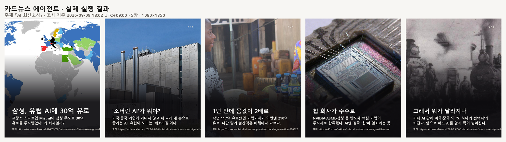

카드뉴스 에이전트 · 실행 리포트
이 페이지는 실제 실행 기록(sample-run/run-evidence.json)에서 «그대로» 만들어집니다.
손으로 쓴 것이 아닙니다. 생성 스크립트: tools/make-report.py
① 조사② 내가 후보 선택③ 에이전트가 질문④ 내가 답변⑤ 심층 검증⑥ 기획⑦ 내가 승인⑧ 제작⑨ 부분 수정⑩ 내려받기
| 주제 | AI 최신소식 |
|---|---|
| 조사 기준 | 2026-09-09 18:02 UTC+09:00 · 최근 7일 |
| 후보 | 10개 조사 → c1 선택 |
| 독자 | AI 입문자 — '소버린 AI가 뭐고 왜 중요한가'부터 — 에이전트가 «물었고» 사람이 골랐습니다 |
| 카드 | 5장 · 1080×1350 · 배경 5/5 확보 |
| 산출물 | cardnews.zip (5.5 MB) + manifest.json |
완성된 카드 5장

심층 검증 — 확인한 것과 못 한 것을 나눴습니다
확인한 사실
Mistral이 2026-09-08 삼성전자 주도로 30억 유로 규모 시리즈 D를 마감했다고 발표 (TechCrunch 등 복수 매체 확인)
포스트머니 기업가치 약 210억 유로(달러 환산 ~$24B)로, 1년 전 시리즈 C의 117억 유로에서 약 2배 상승
공동 리드: EQT 운용 Scaleup Europe Fund와 기존 투자자 PSG Equity
참여 투자자: 신규 Advent·BlackRock·룩셈부르크 대공국, 기존 a16z·ASML·General Catalyst·Lightspeed·NVIDIA·Salesforce Ventures
직전 시리즈 C(약 1년 전)는 ASML이 리드했고 당시 가치는 117억 유로
자금 용도: 컴퓨트 확충·인프라 구축·상업화 가속·해외 확장
발표 주체의 주장
Mistral 주장: '유럽 테크 기업 사상 최대 규모의 지분 투자'
Mistral 자기규정: '유럽판 ChatGPT'가 아니라 '소버린 오픈웨이트 AI 랩'을 지향한다
마크롱 프랑스 대통령: 프랑스·한국의 'AI 제3의 길' 구축을 반영한다는 정치적 해석
아직 확인 못 한 것
리드 투자자인 삼성이 실제 투입한 금액과 취득 지분율
발표된 밸류에이션이 클로징 확정 기준인지 텀시트 기준인지
'유럽 사상 최대'라는 표현이 독립 데이터로 검증됐는지
자료끼리 어긋나는 것
달러 환산액이 매체마다 상이: ~$3.5B(TechCrunch/다수) vs $3.3B(TradingKey), 밸류에이션도 $24B~$24.4B — 환율·반올림 차이로 추정. 유로 금액(30억)·가치(210억)는 일치
리드 표기 차이: 다수는 '삼성 단독 리드', 일부(Sifted)는 삼성·NVIDIA·ASML·Scaleup 공동 강조
출처
편집 판단
| 독자 | AI 입문자 — '소버린 AI가 뭐고 왜 중요한가'부터 입문자는 숫자 자체보다 '왜 이 돈이 화제인지'와 소버린 AI 개념이 먼저 잡혀야 뉴스가 이해됨 |
|---|---|
| 형식 | 이야기형 '삼성이 왜? → 소버린 AI란? → 1년 만에 몸값 2배 → 그래서 우리에게 무슨 의미'로 이어지는 서사가 개념과 사건을 한 흐름에 담아 입문자에게 가장 친절함 |
| 표지 후보 | 삼성이 유럽 AI 회사에 4조 원을 넣은 이유 '소버린 AI'가 뭐길래 — Mistral 몸값 1년 만에 2배 미국도 중국도 아닌 '제3의 AI', 유럽의 승부수 |
삼성이 유럽 AI에 4조 원을 넣은 이유 — '소버린 AI' 이야기 스토리보드 v1 · 사람이 승인함
| # | 역할 | 제목 | 핵심 | 그림 계획 |
|---|---|---|---|---|
| 1 | 표지 | 삼성, 유럽 AI에 30억 유로 | 프랑스 스타트업 Mistral이 삼성 주도로 30억 유로를 투자받았다. 왜 화제일까? | 유럽 지도 위 프랑스 자리에 빛나는 작은 회사 건물, 한국 방향에서 큰 화살표가 자금을 실어 날아오는 장면 |
| 2 | 본문 | '소버린 AI'가 뭐야? | 미국·중국 기업에 기대지 않고 내 나라·내 손으로 굴리는 AI. 유럽이 노리는 '제3의 길'이다. | 미국 깃발 서버와 중국 깃발 서버 사이에서, 유럽연합 색의 세 번째 서버가 독립적으로 서 있는 구도 |
| 3 | 본문 | 1년 만에 몸값 2배 | 작년 시리즈 C에서 117억 유로였던 기업가치가 이번엔 210억 유로로 뛰었다. | 작은 저울추(117)에서 두 배 큰 저울추(210)로 커지는 성장 그래프, 위로 치솟는 화살표 |
| 4 | 본문 | 칩 회사가 주주로 | NVIDIA·ASML·삼성 등 반도체 핵심 기업이 투자자로 합류했다. AI엔 결국 '칩'이 열쇠라는 뜻. | 컴퓨터 칩을 중심에 두고 여러 대기업 손이 함께 그 칩을 떠받치는 장면 |
| 5 | 요약 | 그래서 뭐가 달라지나 | 거대 AI 판에 미국·중국 외 '또 하나의 선택지'가 커진다. 앞으로 어느 AI를 쓸지 폭이 넓어진다. | 사용자가 여러 갈래 길 앞에 서서 세 방향(미국·중국·유럽) 이정표를 바라보는 뒷모습 |
실행 기록 사람이 끼어든 지점을 굵게
| 주체 | 단계 | 내용 | 소요 | 비용 |
|---|---|---|---|---|
| engine | research | 웹 검색 시작 | ||
| engine | research | 124.5초 | $0.731 | |
| 사람 | selection | 후보 1개 선택 | ||
| engine | deep | 심층 검증 시작 | ||
| engine | deep | 55.0초 | $0.242 | |
| 사람 | answer | 답변: AI 입문자 — '소버린 AI가 뭐고 왜 중요한가'부터 | ||
| engine | deep | 심층 검증 시작 | ||
| engine | deep | 31.5초 | $0.108 | |
| engine | storyboard | 기획 시작 | ||
| engine | storyboard | 25.9초 | $0.087 | |
| 사람 | approve | 스토리보드 v1 승인 | ||
| system | produce | 카드 5장 제작 | ||
| 사람 | approve | 스토리보드 v1 승인 | ||
| system | produce | 카드 5장 제작 | ||
| 사람 | revise | 카드 3 수정 | ||
| 사람 | approve | 최종 승인 |
엔진 호출 4회 · 사람 개입 6회 · 합계 $1.17
⚠ 남긴 오류 — 숨기지 않았습니다
image — no_usable_license
검색 결과에 PD/CC 이미지가 없습니다 (0건 확인)
→ 카드 1 의 [이미지 다시] 를 누르세요
image — no_usable_license
검색 결과에 PD/CC 이미지가 없습니다 (0건 확인)
→ 카드 2 의 [이미지 다시] 를 누르세요
image — download_or_decode_failed
cannot identify image file <_io.BytesIO object at 0x000001DCEC040BD0>
→ 카드 3 의 [이미지 다시] 를 누르세요
image — download_or_decode_failed
cannot identify image file <_io.BytesIO object at 0x000001DCECE09530>
→ 카드 4 의 [이미지 다시] 를 누르세요
image — download_or_decode_failed
cannot identify image file <_io.BytesIO object at 0x000001DCECE095D0>
→ 카드 5 의 [이미지 다시] 를 누르세요
이 오류들은 «고치기 전» 기록입니다. 원인과 수정은 README 「막힌 것과 어떻게 풀었나」에 다섯 건으로 정리했습니다.